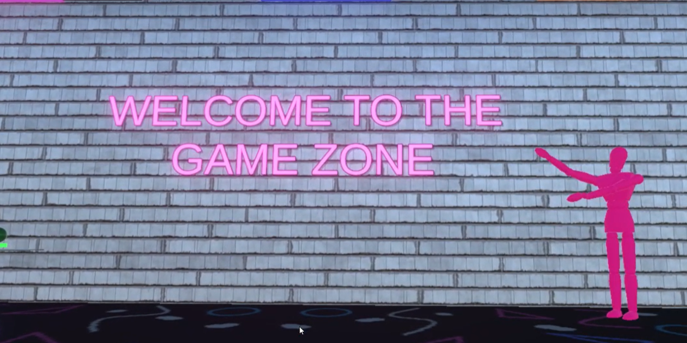
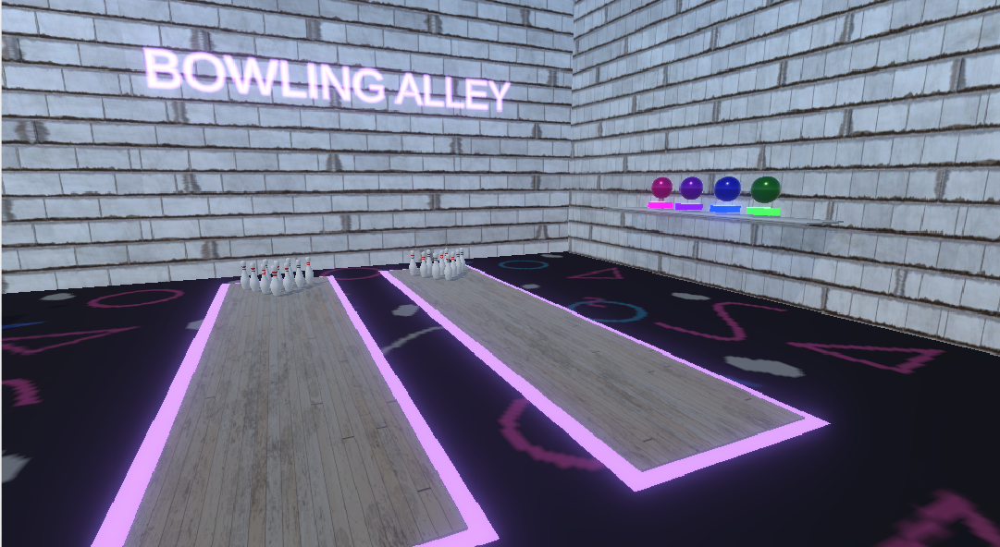
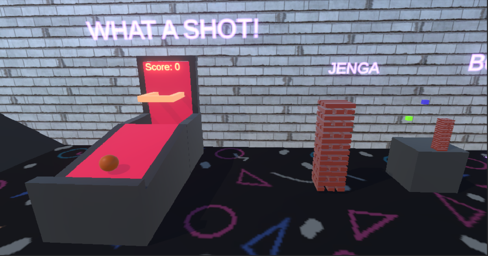
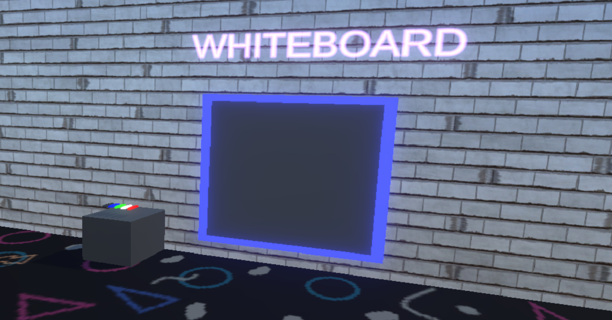
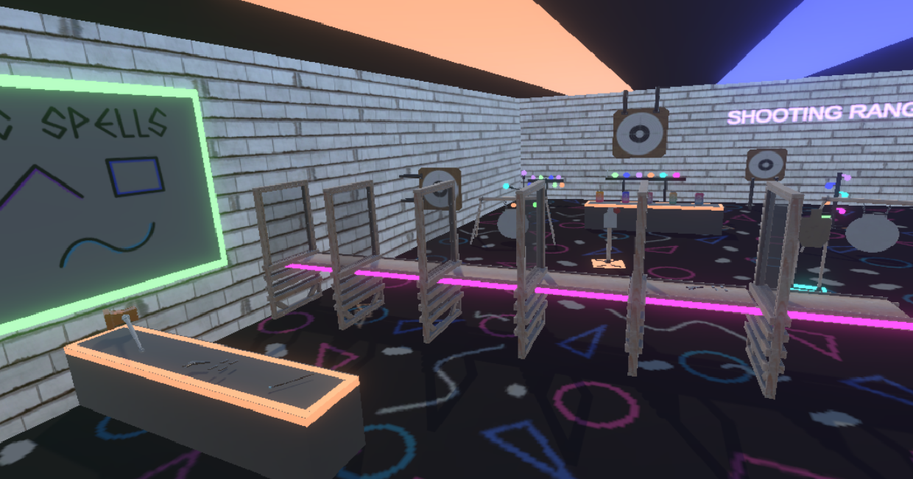
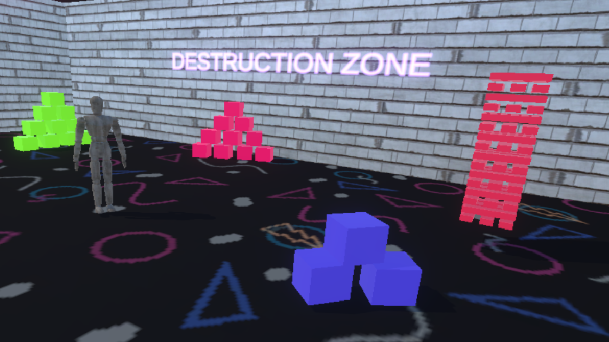
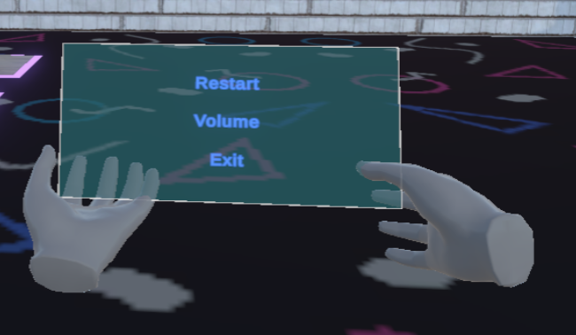

The mini-games that feature in this project are the following:
In the scene, two bowling lanes have been included, each accompanied by four balls with different weights.
These balls are positioned on a shelf, each on its respective base, to which they return once placed nearby, facilitated by a Socket Interactor.
Both lanes are made with a slippery material to facilitate the rolling of the ball, and all the pins have been placed in the interaction layer.
Tgether with a Grab Interactable, this setup enables interaction with the bowling elements.

We have also included a basketball hoop game as seen in arcades.
When the player catches the ball and shoots, if it goes into the basket, the puntuation system included to the game will increase and the ball will appear on the correspondent spawn point.
In the scene, two Jenga blocks of different sizes are present.
The XR Grab Interactables have Dynamic Attach enabled, ensuring that when one of the blocks is grabbed, the others don't fly through the air and are instead attached to their initial transform.

A board has been included that acts as a whiteboard when interacting with the various markers in the environment.
This has been created using a second orthographic camera that projects everything interacting on its layer with a specific shader.

At the upper section of the stage, a shooting range has been set up to test the two weapons available.
All targets are equipped with a collider that causes both bullets and spells to bounce off them.

On the same table where you find both the wand and the pistol, there is also a mallet.
This mallet has been implemented with a double grab, which in turn allows dynamic scaling of the weapon if the hands are brought together or separated.
In this area of the stage, several interactable objects have been included for use with the mallet.

This game has been developed using Unity Engine.
At the beginning, you'll notice that if you look at your left wrist, the game interface appears.
Here, you can adjust the volume for both the effects and background music, reset all objects to their initial positions, and exit the game.

Finally, it's worth noting, as mentioned earlier, that both physical hands, which collide with objects in the scene, and non-physical hands, which are displayed based on the real position of our body when colliding with an object, have been included.